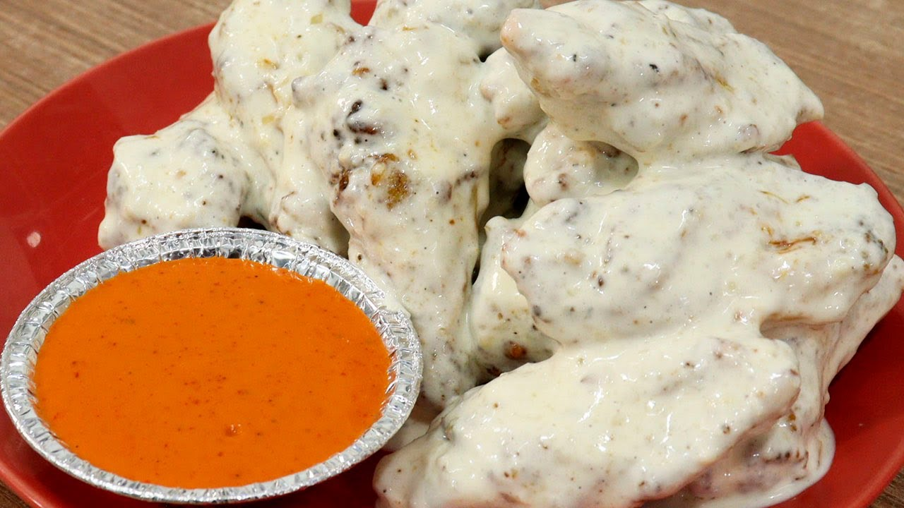

Recetas de cocina
Pollo Ajo y Parmesano

Ingredientes
- 4 pechugas de pollo
- 1 taza de queso parmesano rallado
- 4 dientes de ajo, picados
- 1/2 taza de mantequilla derretida
- Sal y pimienta al gusto
- Perejil fresco para decorar
Instrucciones
- Precalentar el horno a 200°C (400°F).
- En un tazón, mezclar el queso parmesano, el ajo, la mantequilla, la sal y la pimienta.
- Colocar las pechugas de pollo en una bandeja para hornear y cubrirlas con la mezcla de queso.
- Hornear durante 25-30 minutos o hasta que el pollo esté cocido y dorado.
- Decorar con perejil fresco antes de servir.